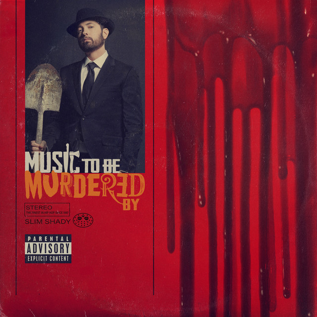

Music to Be Murdered By

Este album fue lanzado en 2020 por Eminem, contiene varias canciones famosas que se populariarizaron de forma instantanea.
Canciones que contiene este album:
-
Prenomition (intro)
-
Unnacommodating (feat. Young M.A)
-
You Gon' Learn (feat. Royce Da 5'9" & White Gold)
-
Those Kinda Nights (feat. Ed Sheeran)
-
Alfred (interlude)
-
In Too Deep
-
Godzilla (feat. Juice WRLD)
-
Darkness
-
Leaving Heaven (feat. Skylar Grey)
-
Yah Yah (feat. Royce Da 5'9", Black Thought, Q-Tip & Denaun)
Reproducir cancion Godzilla
Volver